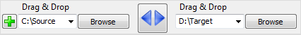

- Folder Comparison and Synchronization -
Choose
left and right directories.

"Compare"
them.
Select
synchronization settings.
Press
"Synchronize..."
to begin synchronization.

Start comparison
Setup comparison settings
Setup synchronization settings
Start synchronization
Tree overview panel
Add additional folder pairs
Select left and right folders
Synchronization preview
Save/load configuration
Filter files
Select categories for preview
Synchronization statistics